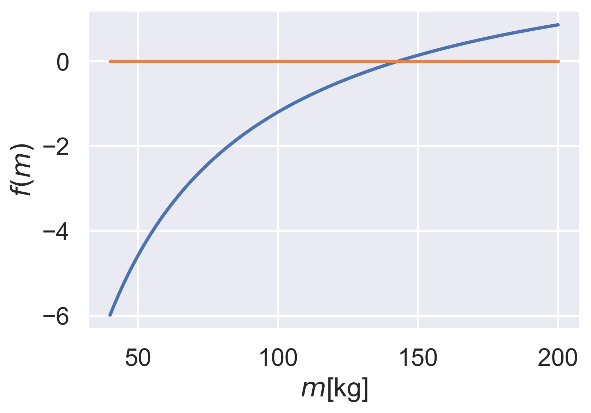

Solution of non-linear equations
William Oquendo
woquendo@gmail.com
Introduction to root finding

A problem example : Bunge jumping (From Chapra 2012)
The velocity for a jumper is given as \[ v(t) = \sqrt{\frac{gm}{c_d}} \tanh \left( {\sqrt{\frac{gc_d}{m}}t} \right) . \] You need to find the critical mass \(m\) such us the speed does not exceed \(v = 36\) m/s after \(t = 4\) s, for \(c_d = 0.25\) kg/m. How to do it?
Start by defining a new function, \(f(m)\), such us \[ f(m) = \sqrt{\frac{gm}{c_d}} \tanh \left( {\sqrt{\frac{gc_d}{m}}t} \right) - v(t). \] Now your problem is to find the root of the function \(f(m)\)
Graphical method
The first approach is to plot the function \(f(m)\) and find the root graphically. The following snippet shows you how to do that
import numpy as np import matplotlib.pyplot as plt import seaborn as sns # this improves the figures aesthetics from matplotlib import rc rc('text', usetex=True) # use latex rendering sns.set() # activate seaborn sns.set_context("talk") # increase fonts and imporove look for a talk cd = 0.25 g = 9.81 v = 36 t = 4 m = np.linspace(50, 200, 100) # 100 points between 50 an 200 fm = np.sqrt(g*m/cd)*np.tanh(np.sqrt(g*cd/m)*t) - v fig, ax = plt.subplots() ax.plot(m, fm) ax.set_xlabel(r"$m$[kg]") ax.set_ylabel(r"$f(m)$") fig.savefig("images/fm.png", dpi=300, bbox_inches='tight')

Exercise
Plot the function on your computer and find the value for the mass. How much is \(f(m)\) for that value?
Do you think this graphical approach is useful?
Bracketing methods
General characteristics
- This methods require that you define an interval where to find the root.
- There could be single or multiple roots, or no root at all.
- The initial guess for the interval limits are such the root is included.
- The convergence is slow but sometimes guaranteed.

Bisection

For a single root, one has \[ f(x_l) f(x_u) < 0 . \] Therefore, starting from \(x_l\) and \(x_u\) one can refine them until the interval is very small.
Pseudo-code
- Define a given precision \(\epsilon\) and a maximum number of iterations \(N\).
- Choose and initial \(x_l\) and \(x_u\). They must include the root (\(f(x_l)f(x_u) < 0\)).
- Compute a root estimate \(x_r = \frac{x_l + x_u}{2}\). If \(|f(x_r)| < \epsilon\), stop and return \(x_r\) as root.
- If \(f(x_l)f(x_r) < 0\), then \(x_u = x_r\), else \(x_l = x_r\). Return to point 3 until the maximum number of iterations.
Graphical description of the bisection method \(x_r = \frac{x_l + x_u}{2}\)

Exercise
Implement the bisection method and solve the original problem for the mass.
False Position

New definition for \(\ x_r\)
\[ x_r = x_u - \frac{f(x_u)(x_l - x_u)}{f(x_l) - f(x_u)}. \]
Exercise
Implement the false position method by adapting the bisection method (basically just change the computation of \(x_r\)). Compare with bisection to find the root of the mass function.
Exercise
Determine the positive real root of \(\ln(x^2) = 0.7\), (a) graphically, (b) using three iterations of the bisection method, with initial guesses of \(x_l = 0.5\) and \(x_u = 2\), and (c) using three iterations of the false-position method, with the same initial guesses as in (b).
Open Methods
These methods require only a single starting point or two starting points that do not necessarily include the root.
Generally, when an open method converges, it is usually much faster than a bracketing method.
Fixed point iteration
The original problem \(f(x) == 0\) is transformed into \[ x = g(x). \]
Then you make an initial guess for the root, \(x = x_0\), and you iterate as \(x_{i+1} = g(x_i)\).
Exercise
For the function \(f(x) = e^{-x} - x\) use the iteration method (either manually or by using a program), starting from \(x_0 = 0.0\) and performing 11 iterations. Fill/print the following data
| iteration | \(x_i\) | \(f(x_i)\) |
|---|---|---|
| 0 | ||
| 1 | ||
| \(\vdots\) | ||
| 10 |
Exercise
Compute the root of the mass function using the fixed-point method.
Newton-Raphson
The Newton-Rapshon methods are a huge family of very powerful methods employing for both scalar and vectorial non-linear equations. For 1D, the simple derivation is based on the estimation of a slope.

\[ f'(x_i)= \frac{f(x_i) -0}{x_i - x_{i+1}}, \] \[ x_{i+1} = x_i - \frac{f(x_i)}{f'(x_i)}. \] As you can see, this is also an iterative method.
Exercise
Implement the Newton-Raphson method to find the root of the mass function and for the function \(e^{-x} - x\).
Other methods:
There are other methods, much more elaborated, like the secant method, Brent's method, Higher order Newton-Raphson formulas, etc. Implementing those methods in a numerically stable and efficient way could take a lot of time, so for now it is much better to use the scientific python library.
Using Scipy root for one- and multi-dimensional equations
Scipy offers you the root method to compute the root for a
(system) of equations very efficiently. Please go and red the doc at
Scipy root function doc . This work both for a single or a system of
equations. Actually the root method belongs to a more general
optimization module (see optimize docs).
Scalar equation
The following snippet solves the previous example using the root
method:
from scipy import optimize import numpy as np def fun(x): return np.exp(-x) -x sol = optimize.root(fun, [0], method='hybr') print("Solution: ", sol.x) print("f(x): ", fun(sol.x[0])) print(sol)
Solution: [0.56714329]
f(x): 0.0
fjac: array([[-1.]])
fun: array([0.])
message: 'The solution converged.'
nfev: 8
qtf: array([-3.30757643e-12])
r: array([1.56714333])
status: 1
success: True
x: array([0.56714329])
Multidimensional equation (you can also use fsolve)
from scipy import optimize import numpy as np # x is a list (x[0] = x, x[1] = y) def fun(x): return [x[0] + 0.5 * (x[0] - x[1])**3 - 1.0, 0.5 * (x[1] - x[0])**3 + x[1]] sol = optimize.root(fun, [0, 0], method='hybr') print("Solution: ", sol.x) print("f(x): ", fun(sol.x)) print(sol)
Solution: [0.8411639 0.1588361]
f(x): [-1.1102230246251565e-16, 0.0]
fjac: array([[-0.89914291, 0.43765515],
[-0.43765515, -0.89914291]])
fun: array([-1.11022302e-16, 0.00000000e+00])
message: 'The solution converged.'
nfev: 12
qtf: array([ 1.19565972e-11, -4.12770392e-12])
r: array([-2.16690469, 1.03701789, -1.10605417])
status: 1
success: True
x: array([0.8411639, 0.1588361])
Using Sympy to find all roots
SymPy is a Python library for symbolic mathematics. among this, it
includes solvers to solve systems of equations finding all
roots. For modern versions, use the function solveset.
import sympy as sym x, y, z = sym.symbols('x y z') res = sym.solveset(x**2-1, x) print(res)
{-1, 1}
import sympy as sym x= sym.symbols('x') res = sym.solveset((x+2)*(x-1)*(x-2), x) print(res)
{-2, 1, 2}
Non-linear equations with sympy
See the solvers documentation .
import sympy as sym a, b, c, d = sym.symbols('a, b, c, d', real=True) res = sym.nonlinsolve([a**2 + a, a - b], [a, b]) print(res) x, y= sym.symbols('x y') res = sym.nonlinsolve([x*y - 1, x - 2], x, y) print(res) res = sym.nonlinsolve([x**2 + 1, y**2 + 1], [x, y]) print(res)
{(-1, -1), (0, 0)}
{(2, 1/2)}
{(-I, -I), (-I, I), (I, -I), (I, I)}
Exercises
Scalar functions
Compute the root for the following scalar functions:
- \(f(x) = \sin(\sqrt{x}) - x\), \(x_0 = 0.5\)
- \(f(x) = x^3 -6x^2 +11x - 6.1\), \(x_0 = 3.5\)
The bungee jumping again
Plot the critical mass as a function of the coefficient \(c_d \in {0.1, 0.15, 0.2, 0.25, 0.3, \ldots, 0.9}\), such us the speed is \(v = 36\) m/s after \(t = 4\) s.
Remember that \[ f(m) = \sqrt{\frac{gm}{c_d}} \tanh \left( {\sqrt{\frac{gc_d}{m}}t} \right) - v(t). \]
Intersection on 3D objects (System of equations)
Ref: Kiusalaas, Numerical Methods in Engineering with Python 3, Example 4.8 Determine the points of intersection between the circle \(x^2 + y^2 = 3\) and the hyperbola \(xy = 1\). Start from \(x = 0.5, y = 1.5\).
The solutions are \(\pm(0.618, 1.618)\) and \(\pm(1.618, 0.618)\).
System of non-linear equations
Ref: Kiusalaas, Numerical Methods in Engineering with Python 3, Example 4.9
Solve the following non-linear system: \[ \sin x + y^2 + \ln z − 7 = 0 \] \[3x + 2^y − z^3 + 1 = 0\] \[x+y+z−5=0\] Starting from \((1, 1, 1)\).
The solution is \([0.59905376 , 2.3959314 , 2.00501484]\)
Note: If you solve this using sympy, you will find that there
are infinite solutions.
Circle from points
Ref: Kiusalaas, Numerical Methods in Engineering with Python 3, Exercise 4-26 The equation of a circle is \((x−a)^2+(y−b)^2 =R^2\) where \(R\) is the radius and \((a,b)\) are the coordinates of the center. If the coordinates of three points on the circle are
| x | 8.21 | 0.34 | 5.96 |
| y | 0.00 | 6.62 | −1.12 |
determine \(R, a, b\)
Multi-function, plot
Solve the system \[y-x^3 -2x^{22} +1=0\] \[y+x^2-1=0\] Plot both functions to verify graphically that you have found the roots.
Continuous covering location model - (Prof. William Guerrero)
- Encontrar las coordenadas \((x,y)\) de los centros de atención a clientes.
- Hay que encontrar coordenadas para \(k\) centros de distribución.
- Las coordenadas del cliente \(j\) estan dadas por las coordenadas \((a_j, b_j)\).
- Hay una distancia máxima \(R\) entre los clientes y los centros de distribución.
- Resolver el siguiente Sistema de ecuaciones no lineales: Sea \(h_{ij}\) la holgura que existe entre la distancia máxima y la distancia real (debe ser positiva)
\[\sqrt{(x_j - a_i)^2 - (y_j-b_i)^2} = R - h_{ij}, \forall j, \forall i\].
Multi-dimensional system
E. Ward, Numerical Methods, Exercise 3-21 Consider the nonlinear system \[ f (x, y) = x^2 + y^2 − 25 = 0, \] \[ g(x, y) = x^2 − y − 2 = 0. \]
Plot both functions. Compute the solution of the system and identify graphically the solution points.
Rocket
The upward velocity of a rocket can be computed by the following formula: \(v = u \ln m_0 − gt m_0 −qt\) where \(v =\) upward velocity, \(u =\) the velocity at which fuel is expelled relative to the rocket, \(m_0 =\) the initial mass of the rocket at time \(t = 0, q =\) the fuel consumption rate, and \(g =\) the downward acceleration of gravity (assumed constant \(= 9.81\) m/s\(^2\)). If \(u = 1800\) m/s, \(m_0 = 160,000\) kg, and \(q = 2600\) kg/s, compute the time at which \(v = 750\) m/s. (Hint: \(t\) is somewhere between \(10\) and \(50\) s.)